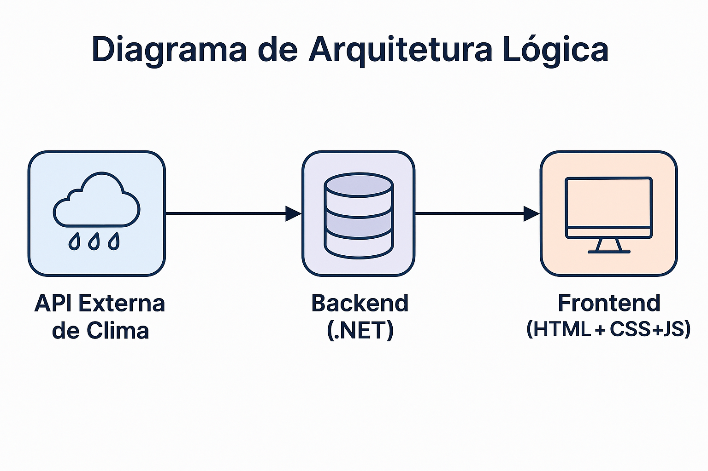
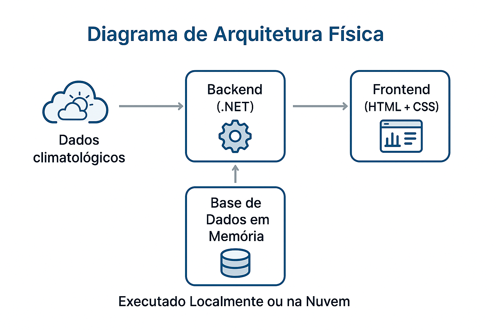
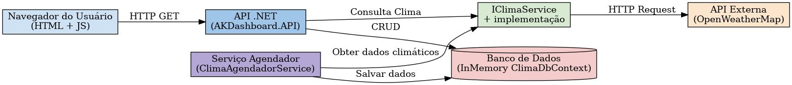

Diagramas de Arquitetura
1. Diagrama de Arquitetura Lógica
🖼️ Visualização

O Diagrama de Arquitetura Lógica apresenta os principais componentes do sistema e como eles se comunicam de forma abstrata.
Ele mostra o fluxo dos dados:
- Uma API externa de Clima fornece dados meteorológicos.
- O backend, desenvolvido em .NET 8, consome esses dados e atualiza as informações a cada 15 minutos.
- O Frontend (HTML + CSS + JS) exibe essas informações de forma gráfica e interativa ao usuário final, com uso de gráficos via Chart.js.
2. Diagrama de Arquitetura Física
🖼️ Visualização

O Diagrama de Arquitetura Física descreve como os componentes estão distribuídos fisicamente na infraestrutura do sistema:
- A aplicação recebe dados via HTTP de uma API externa (simulada ou real).
- O Backend .NET processa essas informações e armazena em um banco de dados em memória.
- O Frontend acessa o backend para recuperar os dados processados e exibi-los ao usuário.
- Todo o fluxo pode ser executado localmente, mas pode ser facilmente migrado para servidores em nuvem, se necessário.
🖼️ Modelo completo

⬅️ Voltar para a Página Inicial